We’re interested in electromagnetic radiation that is generally emitted from either electron transitions within the shells of an atom (X-rays), or transitions due to nuclear decay (gamma rays) [1],[2]. We will not discuss too much about charged particles.
Characteristic X-rays are a result of electronic transitions from higher energy to lower energy states (farther away from the nucleus to a closer shell to it). Bremsstrahlung or ‘braking radiation’ is when charged particles are deccelarated or deflected due to electronic or nuclear interactions within an atom [1]. The fraction of electron energy converted into bremsstrahlung increases with increasing incoming electron energy and increasing atomic number of the scattering material [2]. In X-ray tubes, these continua of lower energy emissions are removed through filters, or materials that can absorb these photons.
There is a competing process to X-ray generation in atoms known as Auger electron emission. The vacancy in the inner shell is filled by an outer shell electron just like before, but this time the excess energy is absorbed by another outer shell electron and it is violently ejected out. We define ‘fluorescent yield’ as the fraction of all cases where an atom is excited emits a characteristic X-ray during de-excitation.
Low-energy X-rays penetrate only small thickness of materials and are called ‘soft radiations’.
Excited nuclear states decay to stabler nuclei and emit gamma rays. Let us look at an example to understand some more details. Figure 1 shows the decay scheme for Co-60. Due to beta-decay, Co-60 nuclei have a half-life of around 5.26 years. When they initially decay, the Ni-60 nuclei are at an excited state corresponding to 2.505 MeV. It is the de-excitation of Ni-60 that causes gamma ray emission, and not directly the Co-60 nuclei [2].
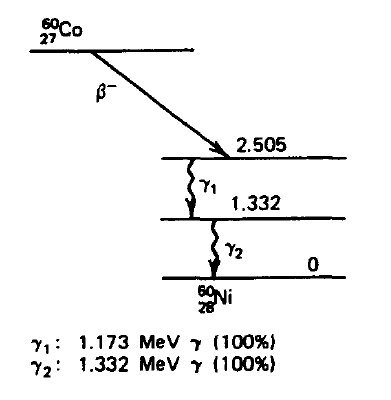
Here, there are two emissions \(\gamma _1\) and \(\gamma _2\) for the Ni-60 nuclei to ground state. The half-life for gamma emission is tied to the beta decay of the Co-60 nucleus, however.
Another source of gamma ray emission is positron annihilation, also known as annihilation radiation. This occurs when a positron (due to a positron decay of a nucleus) combines with an electron to give a characteristic 511 keV emission. Na-22 is an example where the nucleus undergoes positron decay to an excited Ne-22. The Ne-22 de-excites and emits 1.274 MeV gamma photons while the positron from the nuclear decay combines with neighboring electrons in the source to emit 511 keV gamma photons.
The activity of a radioisotope is the number of disintegrations per second (DPS) and is given by eqn 1
\begin {equation} \label {eqn:law_of_decay} \frac {d N}{dt} = -\lambda N \end {equation}
where \(N\) is the number of radioactive nuclei and \(\lambda \) is the decay constant. If we start with \(N_0\) nuclei at time \(t=0\), we see that \(N (t) = N_0 \exp (-\lambda t)\) remaining radioactive nuclei at time \(t\). Note that eqn 1 is the decay rate only. If the daughter products of the decay have their own activity, this is not captured by the above eqn.
The historical units of activity has been Curie (Ci) and is around \(3.7 \times 10^{10}\) DPS which is the available best estimate of 1 gm of pure Ra-226 [2]. Becquerel (Bq) is the SI unit and is simply 1 DPS, or \(2.703\times 10^{-11}\) Ci.
| Input Activity (Ci) | Common SI Prefix |
| 0.1 \(\mu \)Ci | 3.70 kBq |
| 1.0 \(\mu \)Ci | 37.00 kBq |
| 100.0 \(\mu \)Ci | 3.70 MBq |
| 250.0 \(\mu \)Ci | 9.25 MBq |
| 500.0 \(\mu \)Ci | 18.50 MBq |
| 1.0 mCi | 37.00 MBq |
| 5.0 mCi | 185.00 MBq |
| 1.0 Ci | 37.00 GBq |
Tables 1a, 1b show the conversion between some common values of activities.
Note that the soruce disintegration rate does NOT equal to the radiation emission rate. A given isotope can have different routes of decay with different probabilities of occurrence. Each route has its own radiation emission associated with it (could be X-ray, gamma, beta, alpha, etc.). These probabilities need to be taken into account when calculating a particular radiation emission rate.
While we talk about gamma rays here, the same analysis is true for X-rays. When gamma rays interact with a medium, they can transfer a part of, or all of the energy to the electrons. The resulting secondary electrons act similar to beta particles (fast electrons) [2]. Gamma ray detectors are designed to fully stop these secondary electrons so that their entire energy may contribute to the output signal.
Electrons can interact with other electrons, or the nucleus inside a medium. They can lose a large fraction of energy even in a single electronic interaction due to their light weight. Radiative losses through bremsstrahlung mechanism increases as the mass of the charged particle decreases (electrons are more affected than, say alpha particles), incoming electron energy increases, and atomic number of the absorber increases. If the emitted bremsstrahlung photons are low enough in energy, they can be reabsorbed fairly close to the point of origin within the medium. [2] notes that radiative losses are always a small fraction of the energy losses unless the atomic number of the absorber is very high, or the fast electron energy is very high. Most of the energy is lost in collisions where the energy is transferred to other electrons - which are then either excited (and then emit characteristic X-rays), or are ejected as Auger electrons.
To summarize, at lower electron energies we should see more characteristic X-rays and Auger electrons than bremsstrahlung radiation for low-\(Z\) absorbers. As the atomic number increases, or the beta particle energy increases, so does the radiative losses through bremsstrahlung mechanism. Bremsstrahlung production scales approximates as \(Z^2\) of the absorber [2].
Gamma rays interact with matter through photoelectric (PE) absorption, Compton scattering, and pair production. These interactions result in sudden and abrupt changes in the gamma photon - either the photon disappears completely, or is scattered through a significant angle. This is in contrast with the gradual slow down as seen with the charged particles above [2].
In PE absorption, the gamma photon is completely absorbed by the atom (not the free electrons in the medium but the atom itself) and an electron from the innermost shell(s) is ejected out. The vacancy created due to the photoelectron generation is filled up by a free electron in the medium and leads to characteristic X-ray emission. These X-rays may be reabsorbed close to the site of generation. Auger electron emission can substitute the characteristic X-ray emission as usual. PE absorption is a very strong function of the atomic number of the absorber (\(\propto Z^{4-5}\)).
In Compton scattering, the gamma photon transfers a portion of its energy to an electron, which is assumed to be at rest initially. It is the predominant interaction mechanism in the range of energies from typical radioisotopes. The Klein-Nishina formula predicts the angular distribution as a function of the incoming energy, \(Z\) of the scattering material and a few other constants. The probability of Compton scattering per atom of the absorber depends on the number of electrons available as scattering targets, and therefore, increases linearly with \(Z\).
We ignore coherent scattering and pair production here.
The sum of the probabilities that a photon maybe absorbed or scattered away from the detector due to the processes mentioned above can be modeled as the linear attenuation coefficient.
\[\mu _{\text {LAC}} = \mu _{\text {PE}} + \mu _{\text {Compton}} + \mu _{\text {PP}}\]
If we start with \(N_0\) number of gamma photons initially, after passing through a scatterer of thickness \(t\), we see \(N\) photons at the detector
\begin {equation} \label {eqn:lac_collimated} N = N_0 \exp (-\mu _{\text {LAC}} t) \end {equation}
We can define a mass attenuation coefficient (MAC) from \(\mu _{\text {LAC}}\) and the density of the material \(\rho \)
\[\mu _{\text {MAC}} = \frac {\mu _{\text {LAC}}}{\rho }\]
It is interesting to note that the mass attenuation coefficient of a material does not change with the physical state of the material. For example, it is the same for water in liquid or vapor form [2].
A point to note about eqn 2 is that the derivation assumes that the source beam was collimated. There are no gamma photons that can scatter into the detector from different parts of the scattering material as shown in figure 2.
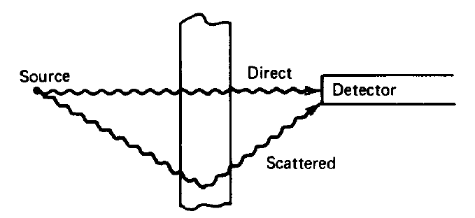
Eqn 2 may not be valid anymore in this uncollimated or ‘broad beam’ scenario and we may see additional flux contributed by the scattering into the detector.
Exposure \(X\) is defined as the total charge \(dQ\) due to ionization created by secondary electrons that were created by one of the three interaction mechanisms between gamma rays and the medium in a mass \(dm\). The medium we usually measure this is air.
\[X = \frac {dQ}{dm}\]
The units are C/kg or roentgen (R) where 1 R = \(2.58 \times 10^{-4}\) C/kg.
Let us make the following assumptions
We can then define exposure rate \(\dot {X}\) as
\begin {equation} \label {eqn:exposure_rate} \dot {X} = \Gamma _{\delta } \frac {\alpha }{r^2} \end {equation}
where \(\alpha \) is the activity of the source, \(r\) is the distance from the point source, and \(\Gamma _{\delta }\) is the exposure rate constant of a given radioisotope source. The subscript \(\delta \) implies that we only consider the photons emitted by the source of energy greater than \(\delta \) to contribute to ionization. The units for the exposure rate constant are generally (R\(\cdot \)cm\(^2\))/(hr\(\cdot \)mCi).
The energy absorbed from any type of radiation per unit mass of the absorber is defined as the absorbed dose. The historical unit was rad and defined as 100 ergs/gm. The SI unit is gray (Gy) and is defined as 1 J/kg. Therefore,
\[1 \, \text {Gy} = 100 \, \text {rad}\]
The absorbed dose is important to us since chemical and physical effects due to radiation exposure in a medium is related to this. Careful measurements have shown that an exposure of 1 C/kg amounts to 33.8 Gy in air, and since air and water have nearly the same atomic number on average, we expect this value to be the same for water as well. Another way of saying this is that the average ionization energy of air is 33.8 eV [3].
In biological setting, even if the same amount of energy is absorbed by the tissue in two different settings such as irradiation through alpha particles, and gamma rays, the biological implications of this can be vastly different. The concept of dose equivalence captures this. If the absorbed dose is \(D\), then we define the dose equivalent \(H\) as
\[H = DQ\]
where \(Q\) is the quality factor of the specific radiation in a given medium. \(Q\) is related to linear energy transfer (LET) (or specific energy loss) which determines how much energy is lost per unit distance as the radiation passes through the medium (\(-dE/dx\)). The medium in these cases is usually water since tissue is predominantly water. [2] notes that LET is sufficiently low for beta particles, and therefore for X-rays and gamma rays as well since they depend on secondary electrons to transfer energy. \(Q=1\) in water for most of the cases when these types of radiation are involved.
If \(D\) is expressed in rad, \(H\) is in rem. The SI unit is sievert (Sv).
\[1 \, \text {Sv} = 100 \, \text {rem}\]
Since \(Q=1\) in water/tissue, an absorbed dose of 1 Gy delivers a dose equivalent of 1 Sv.
Assuming we have a point source of activity \(\alpha \) of a particular radioisotope, what is the absorbed dose in water (or tissue) at a distance \(d\) from the source? Since \(Q=1\) for gamma rays of interest and 1 C/kg of exposure amounts to 33.8 Gy of absorbed dose, we can write
\begin {equation} \label {eqn:activity_to_absorbed_dose} \dot {H} = \dot {D} Q = 33.8 \times \Gamma _{\delta } \frac {\alpha }{d^2} \cdot 1 \end {equation}
In eqn 4, all the quantities are in SI units. So \(\dot {D}\) and \(\dot {H}\) are in Gy/s and Sv/s respectively, and activity is in Bq. Be careful with units.
Often in literature, we directly get the dose equivalent rate constant as opposed to the exposure rate constant [4], [5]. The specific gamma dose rate constant replaces the factor \(33.8 \times \Gamma _{\delta }\) and dependence on \(Q\), and replaces it with a single constant \(\Gamma \) that directly gives us the dose equivalent rate in Sv/s (or other equivalent units such as rem/hr) measured for an activity of 1 Ci at a distance 1 m in water [5]. Since the reported rates are at 1 m distance, we can scale them using our point source approximation, and eqn 4 can be rewritten as
\begin {equation} \label {eqn:activity_to_absorbed_dose_gamma} \dot {H} = \Gamma \frac {\alpha }{d^2} \end {equation}
Note than in eqn 5, \(d\) needs to be in meters. If the medium changes from water to something else, say Si, or the scintillator, the \(Q\) factor changes and we need to find the appropriate constant for that medium. We can do this provided we know the mass energy absorption coefficient (MEAC) of air and the material in context [6].
\[\frac {D_{mat}}{D_{air}} = \frac {\text {MEAC}_{mat}}{\text {MEAC}_{air/water}}\]
[3] notes that for energies above 200 keV, the MEAC of Si and air are the same and for energies below that Si is roughly 7 times more absorbent as compared to air. Eqn 5 can now be modified to
\begin {equation} \label {eqn:activity_to_absorbed_dose_gamma_any_mat} \dot {H}_{mat} = \frac {\text {MEAC}_{mat}}{\text {MEAC}_{air/water}} \, \Gamma \frac {\alpha }{d^2} \end {equation}
Kerma (K) is the total kinetic energy transferred by a photon to a unit mass of the medium and includes
Unlike dose, we do not make any assumptions about the energy released from the above processes - they may or may not be absorbed within the medium itself. This is illustrated in figure 3 where the kinetic energy imparted decreases as depth increases (since there are less photons, the others were absorbed in accordance to Beer-Lambert’s law), but the dose matches kerma only beyond a certain point.
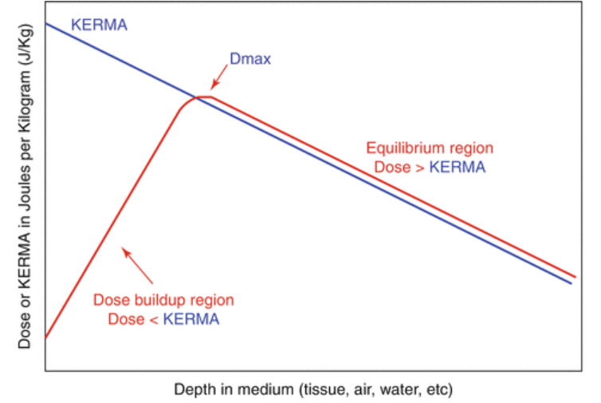
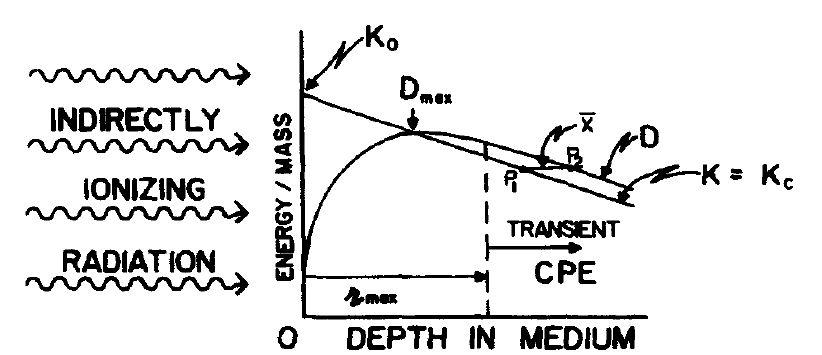
Given we know the photon flux and spectrum, or fluence (\(\psi \)), which is the product of the two, we define mass energy transfer coefficient (METC) as
\[\mu _{tr}/\rho = \frac {K}{\psi } \]
where \(K\) is the kerma as defined in the previous section.
From METC, we define mass energy absorption coefficient (MEAC) as [9]
\begin {equation} \label {eqn:meac} \mu _{en}/\rho = (\mu _{tr}/\rho ) \, (1-g) \end {equation}
where \(g\) is the average fraction of secondary electron energy that is lost to radiative interactions such as bremsstrahlung radiation. Essentially, MEAC gives us the total energy that can be theoretically absorbed in the medium including the secondary electron and its own interactions. Whether this energy predicted by MEAC is absorbed by the system as dose depends on where we land in figure 3. Note that MEAC is the part of the kerma imparted to the secondary electron which is NOT lost as bremsstrahlung, which we assume not to be absorbed by the medium. e-h pair generation is done through the collision part and not the radiative losses part of the kerma delivered to the secondary electron, which is captured by MEAC.
In the dose build up region, we cannot use the estimations given by MEAC to calculate the dose [8]. The kerma calculation is still valid but not the dose. LAC and MAC are still valid, however, since they only estimate probability of the initial interaction between the incoming photon and the medium. Both LAC and MAC do not concern themselves in estimating what happens beyond the primary interaction.
We can calculate the average rate of energy loss per unit path travelled by a charged particle. This is called stopping power and has the units J/m or MeV/cm. We divide it with density of the material to get the mass stopping power (MSP) whose units are Jm\(^2\)/kg or Mev\(\cdot \)cm\(^2\)/gm.
There are two kinds of stopping power we’re mainly concerned with - collision stopping power and radiative stopping power. The collision stopping power is responsible for the e-h pair production while the radiative stopping power generated bremsstrahlung radiation that might escape the medium without depositing its energy [10], [8].
A cavity theory describes the interaction of ionizing or non-ionizing radiation in a particular cavity which is of a different material than the medium it is in. Burlin Cavity theory extends the Bragg-Gray theory to gamma rays and small cavities. This is helpful because we have a small region of interaction in the p-epi and we can use this theory to understand how to model the dose received by it.
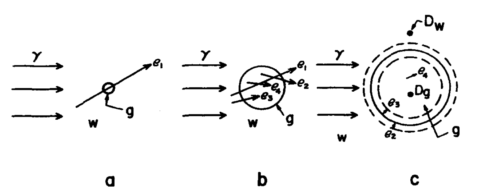
Figure 4 describes three conditions of cavity size relative to the range of the secondary electrons. In the “small” cavity, photon interactions within the cavity itself are negligible; the absorbed dose is delivered almost entirely by “crossers”—secondary electrons generated in the surrounding bulk medium that pass completely through the cavity. In the “intermediate” cavity, the dose is a mixture: it is delivered partly by electrons crossing in from the bulk medium, and partly by secondary electrons generated by photon interactions directly inside the cavity. Finally, in the “large” cavity, the dose is deposited entirely by secondary electrons that were generated by photon interactions within the cavity itself, fulfilling the conditions for charged particle equilibrium [8]. Cavity theory is also applicable when we are not in the equilibrium zone in figure 3.
While not rigorous, an easy way to summarize the result of this theory is that
\[\text {Dose delivered to the cavity} \propto x\cdot \text {Average Stopping Power} + (1-x) \cdot \text {MEAC}\]
where \(x\) is a fraction that depends on how big the cavity is. For small cavities \(x \rightarrow 1\), while for larger cavities, the dose is predicted from MEAC.
From this theory we’ve studied so far, let’s make a model of our system. We have the following parameters in table 2
| Parameter | Value | Comment |
| Thickness of p-epi | 10 \(\mu m\) | Taken from LPMOS module XH018 |
| Resistivity p-epi | 15 \(\Omega \cdot \)cm | Taken from LPMOS module XH018 |
| Built-in voltage of pn junction | 0.7 V | |
| Reverse bias applied | 0.6 V | |
| Density of Si | 2.3 g/cm\(^3\) | |
| Energy to create e-h pair in Si | 3.5 eV | Not the same as \(E_g\) [11] |
| Pixel sizes | 2\(\times \)2 \(\mu m^2\), 44 \(\times \)44 \(\mu m^2\) | SENTRI, VISION 2.1 |
We want to estimate the signal we should see on average when a gamma photon of a certain energy interacts. Here is how I modeled it
There are still a few assumptions I have to check - especially the ones with the recombination, 1D diffusion but 2D geometry factor, etc. The results of the modeling are presented below.
Figure 5 shows the relevant Si properties pulled from the NIST database to implement the above model. Radiative stopping power was ignored as discussed above.
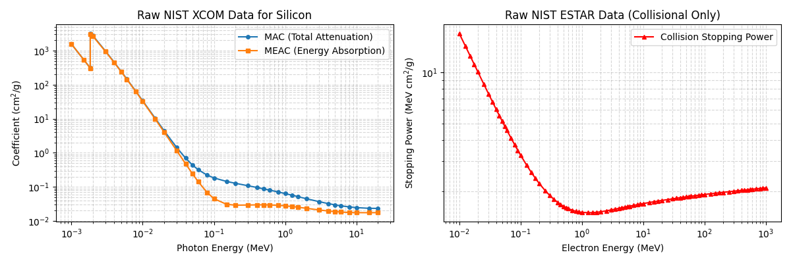
There is a plateau in the stopping power where the secondary electron is least ionizing. In this region, we use the term the radiation as minimum ionizing particle (MIP).
The results of the modeling are summarized in figure 6.
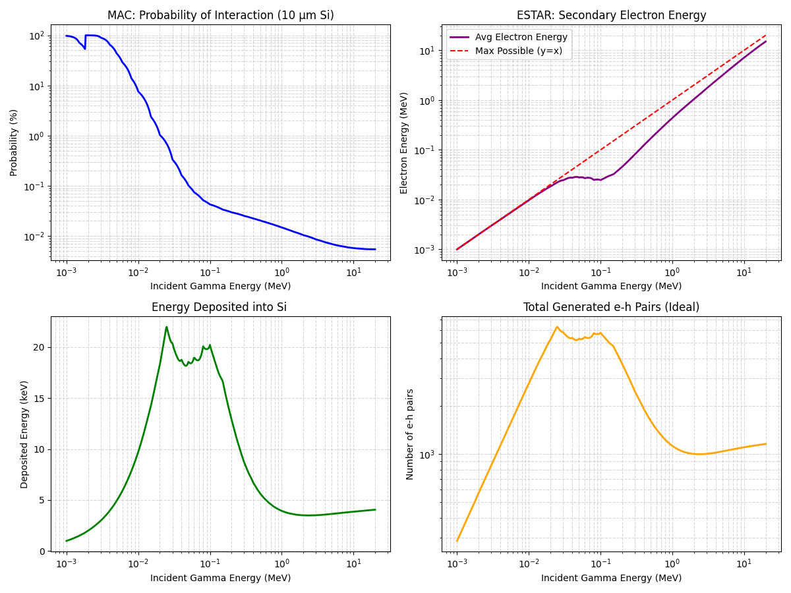
We see that around 20 keV to 100 keV, the energy deposited by the secondary electron is roughly constant at around 20 keV and roughly corresponds to 5500 e-h pairs. If all these e-h pairs are collected, it makes for the best possible signal at the pixel.
Since the e-h pairs are assumed to be generated 10 \(\mu m\) deep, only those e-h pairs that survive after diffusion and recombination are collected at the pixel. The collection rate improves with pixel area and then tapers off as shown in figure 7. It is interesting to note that only 0.2% is lost to recombination overall.
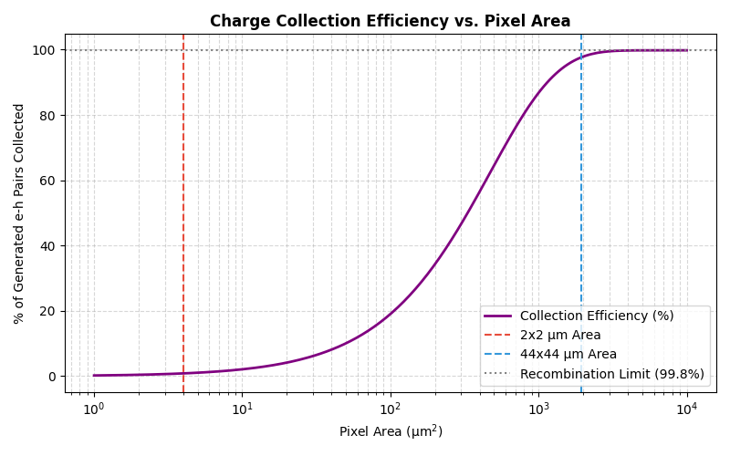
Although it might be tempting to conclude that we need as large a pixel as possible, depending on the topology we use to read out this signal, the parasitic capacitance of the pixel can be an SNR-killer.
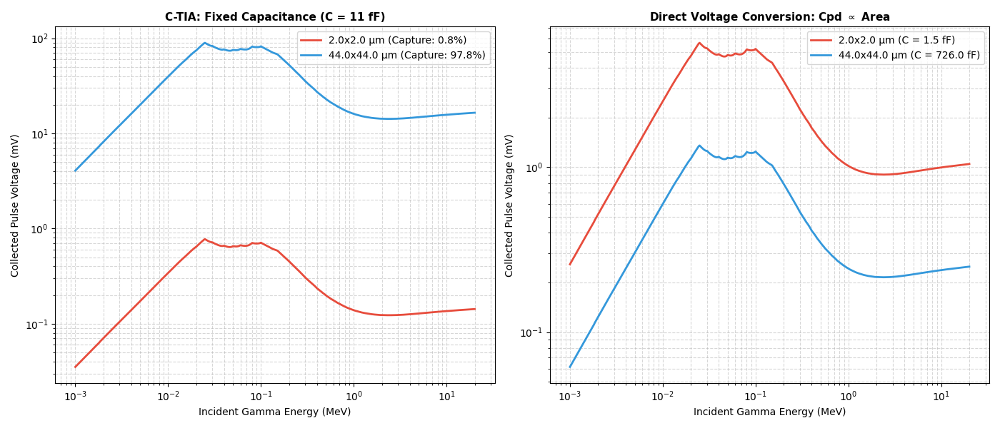
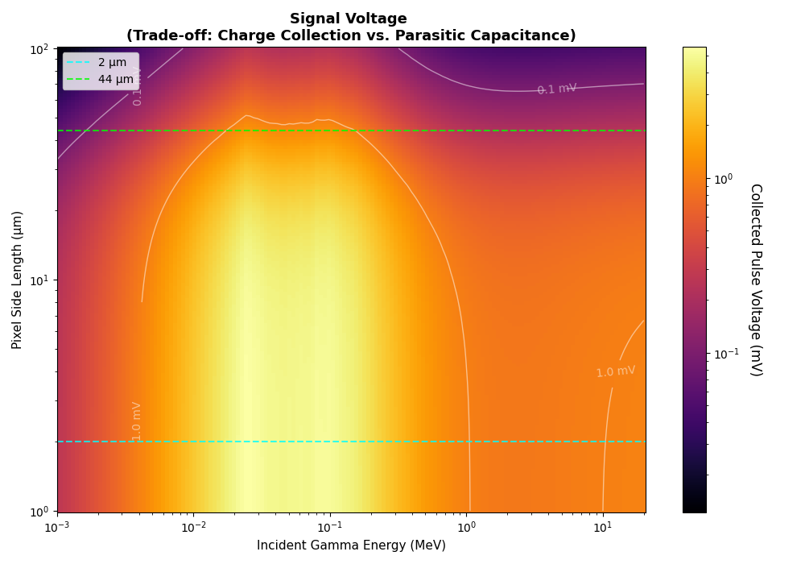
As seen in figure 8, in the case of an ideal C-TIA, we benefit from the higher collection efficiency of a larger pixel whereas in the case of direction conversion like that in SENTRI, we lose conversion gain as the pixel size increases. A more detailed analysis on the circuit topologies will be done later. We also see from the heatmap that, unfortunately, the signal never goes beyond a few mV in a SENTRI-like architecture.
To test the validity of the above modeling exercise, a TOPAS model and simulation was used. In the TOPAS model, the gamma source was a point source which sits 0.1 \(\mu m\) above the 22\(\times \)22 \(\mu m\) pixel with a 2\(\times \)2 \(\mu m\) photodiode at the center. The source was modeled as a parallel beam the same size as the photodiode to maximize probability of interaction. An isotropic source could have been used but it does not matter too much since we divide the total energy deposited by the number of hits anyway.
Figure 9 shows the result for the first set of simulations. A volumetric scorer was used to calculate the sum of the energy deposited and the number of particles that deposited this energy across all the runs. These two metrics were divided to give the energy deposited into silicon by all the interactions - primary, secondary, and any other interactions (confirm this). The python model assumes nothing about the area and solves the problem in 1D whereas the area of the pixel limits the secondary electron travel in 3D space. In other words, some pixels can escape the scorer in TOPAS while this was not modeled in python. This could probably explain why the energy deposited per interaction does not vary too much between the 10 \(\mu m\) and 1.4 \(\mu m\) scorers.
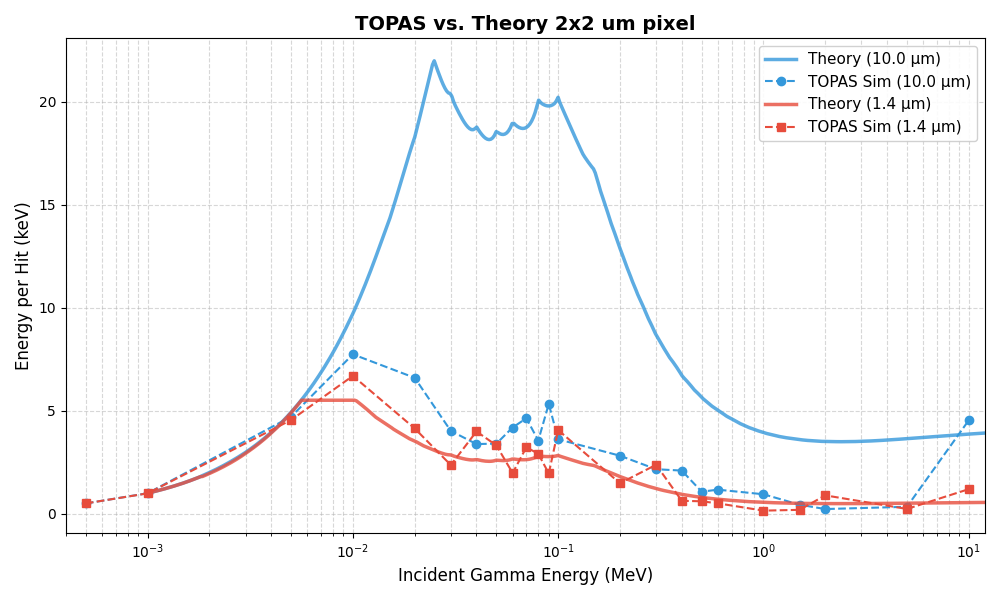
To test this theory, the area of the photo diode was increased (while also increasing the beam source size to match it) and see if there is a difference between both the depths is more evident.
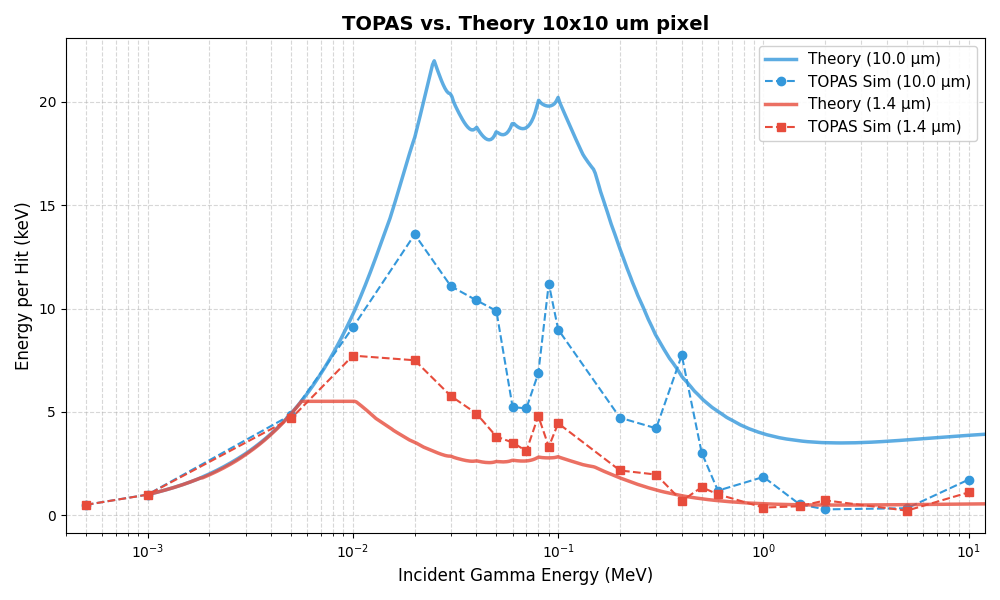
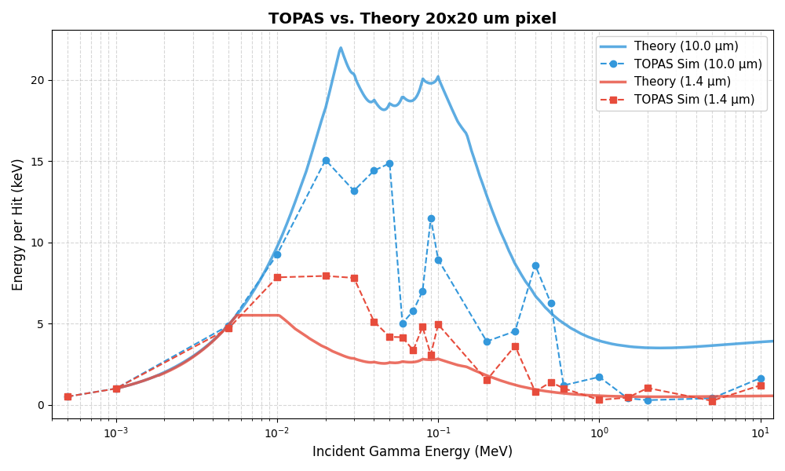
Figure 10 shows the result when the area of the pixel was increased to side lengths 10 \(\mu m\) and 20 \(\mu m\). Firstly, we see the difference between the energy deposited in the depletion region vs. the p-epi. The theory is closer to the TOPAS simulations now as well. The goal of this exercise was not to match TOPAS sims to theory but to see what the python model was missing. Clearly, the secondary electron needs to be modeled as though it were in 3D space and could escape the volume of interest even if the depth was still within bounds. The TOPAS sims, on the other hand, currently ignore any secondary electron generation outside the fill factor area (for both depths) of the pixel that can possibly diffuse and contribute to the signal.
Let us do an example. We have 0.1 \(\mu \)Ci of Cd-109 whose predominant peaks are 22 keV and 88 keV. We assume that the 22 keV is absorbed by the encasing (vendors of disk sources seldom report this).
To recap, detection of gamma rays can occur only when the gamma photons transfer all or part of their energy to an electron, and then this secondary electron’s energy needs to be fully absorbed within the bulk and create charges that can be collected in some fashion for measurement. Therefore, it’s the beta particle/fast electron/secondary electron that matters more for spectroscopy and detection [2]. The secondary electrons can lose energy within the bulk through the emission of characteristic X-rays, or bremsstrahlung emission.
A gamma ray detector should have the following properties [2]
As seen earlier, when a medium completely absorbs the gamma photon, the photoelectron knocked out from the inner shells of the atom has the residual energy \(h\nu _{gamma}-E_{binding}\). This vacancy is filled with characteristic X-ray emission, or Auger electron emission. The latter has extremely short range due to lower energy but the X-rays can actually out of the medium if the medium is not thick enough (or dense enough) to absorb them fully.
Does this X-ray escape matter? After all, the kinetic energy of the photoelectron is enough to estimate the gamma photon energy, provided we know the binding energy. In case, we do not know the binding energy, the X-rays and Auger electrons (and all other secondary processes) can give us a good estimate of the binding energy. Note that the binding energy can be in tens of keV or more for inner shell electrons, and this only increases with increasing atomic number. So if the X-rays do escape from the medium we can underestimate the incoming gamma energy even if it is fully PE absorbed by the medium.
PE absorption is roughly proportional to the atomic number and the incoming energy of the photon as follows [2]
\[\text {Probability of PE absoprtion} \, \propto \frac {Z^{4-5}}{E^{3-4}}\]
The result of a Compton scattering interaction is the creation of a recoil electron and scattered gamma photon, with the division of energy between the two dependent on the scattering angle [2]. The energy of the scattered gamma ray (\(h\nu '\)) in terms of the scattering angle \(\theta \) is given by
\[h\nu ' = \frac {h\nu }{1+\frac {h\nu }{m_0c^2}(1-\cos \theta )}\]
where \(m_0c^2\) is the rest mass energy of the electron and is equal to 511 keV. The kinetic energy of the recoil electron is simply \(h\nu - h \nu '\). When \(\theta = 0^\circ \), the scattered gamma photon barely loses any energy to the recoil electron and doesn’t change its direction. When \(\theta = 180^\circ \), the maximum energy possible is transferred to the recoil electron and the gamma photon is backscattered to its source with an energy
\[h\nu '_{\theta = \pi } = \frac {h\nu }{1+\frac {2h\nu }{m_0c^2}}\]
Note that in the end we’re interested in the recoil (secondary/fast) electron’s energy since this is what leads to detection as discussed earlier.
We define cross-section (\(\sigma \)) for interaction that gives us the probability that the gamma photons interact with the electrons in a given medium. In fact, if we know the electron density \(N\) of the medium in \(1/\text {cm}^3\), and we know probability of interaction through the cross-section \(\sigma \), the linear attenuation coefficient is given by [2]
\[\mu = \sigma N\]
If we define a differential cross-section as shown in figure 11, we can calculate the total electrons generated/total cross-section for Compton absorption as follows. In the left figure,
\[N_{total} = \int _{0}^{\text {Compton Edge} }\frac {dN}{dE} dE\] and on the right figure
\[\sigma _{total} = \int _{0}^{\text {Compton Edge} } \gamma \frac {d\sigma }{d\epsilon } d(\epsilon /\gamma ) = \int _{0}^{\text {Compton Edge} } \frac {d\sigma }{d\epsilon } d\epsilon \]
Since the curves are generated by the Klein-Nishina formula for a give material, we can estimate the total interaction probability by calculating the area under these curves.
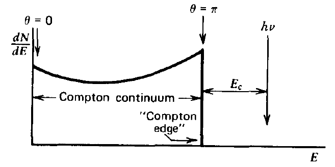
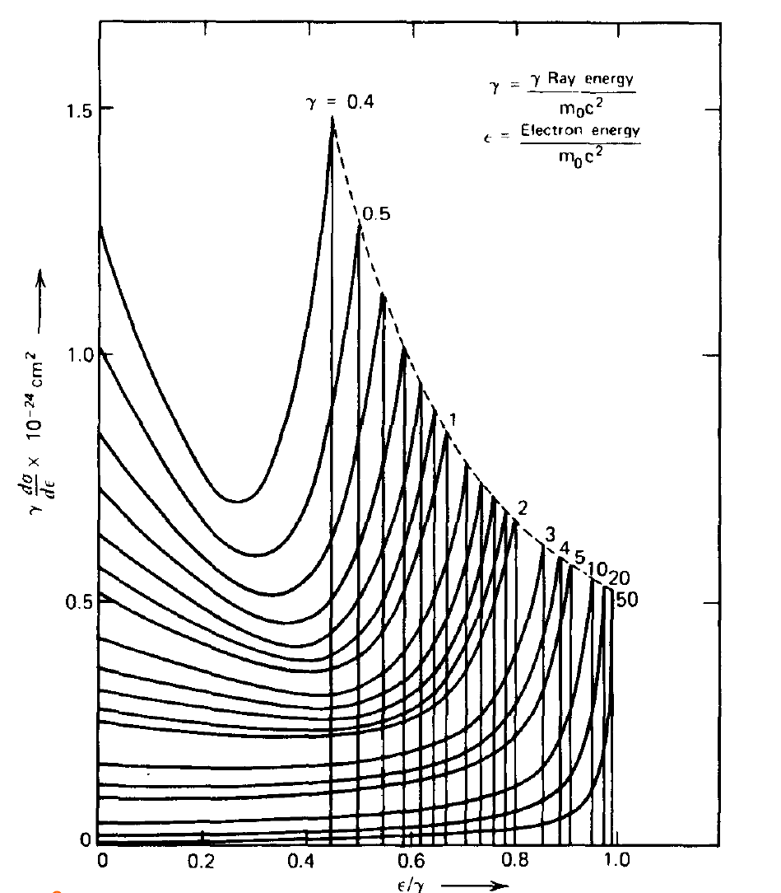
An interesting point to note is that lower energy photons do have higher cross-section (probability) for Compton interaction, but this is still much lower than PE absorption for suitably lower energies. As energy increases, the probability of PE absorption rapidly drops, however, due to the \(E^{-3.5}\) dependence as seen in the previous section.
Let us start with the simplest case - a very large detector. In this scenario, the gamma photons (and the secondary electrons) and any secondary emissions are completely absorbed by the detector. While this is ideal, for most gamma photon energies of interest, the detector will end up being few tens of centimeters thick for complete absorption. [2] notes that the total time taken for the entire absorption event, including all the secondary, tertiary, and further events, is less than a nanosecond in general. It is almost as if the detector absorbed the incoming photon in a single step for all practical purposes.
We next look at “small” detectors where the secondary electrons generated by the gamma photon are fully absorbed, but any secondary radiation such as the characteristic X-rays, or the scattered Compton photon are not fully absorbed. Though the scattered Compton photon is not absorbed, the recoil electron is considered to be fully absorbed by the medium. [2] notes that for energies of interest, “small” size roughly corresponds to 1 or 2 cm. For such detectors, we expect to see partial PE absorption and a Compton continuum. We usually expect only one interaction in the detector.
In between the above two sizes, we see a mix of the above two behaviors. Instead of a simple interaction between the gamma and the medium, we now expect multiple interactions albeit with much lesser probability. The result is that we now have some energies beyond the Compton edge in the differential cross-section plots. Note that the Compton edge concept only applies for a single scattering event.
The above discussion is summarized in figure 12. As always, the area under these curves gives us the total probability of interaction. We ignored pair-production in every case here.
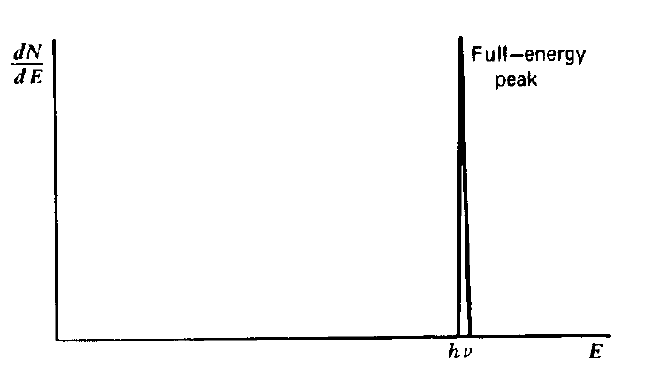
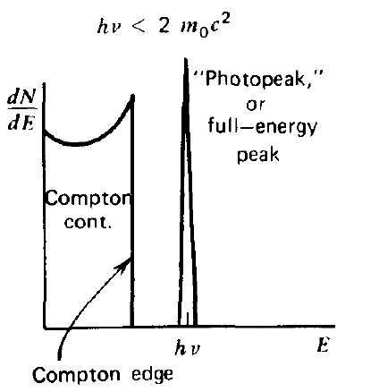
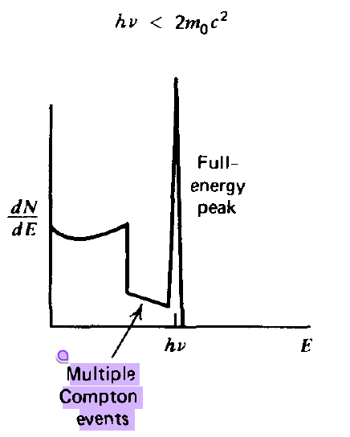
In SENTRI, we have a detection volume much smaller than the “small” detector. At best, we have the entire 750 \(\mu m\) of the substrate in which the e-h pairs can be generated. For us to see these charges, however, they will have to survive recombination and drift to the depletion region which is around 1.5 \(\mu m\). In such a scenario, we expect mostly Compton scattering and very little PE absorption. In the center plot of figure 12, the Compton continuum will have much higher probability density than the PE peak. Compared to the same figure, the absolute heights are smaller than the “small” detector case since a large fraction of the secondary electron’s energy might escape the ASIC’s detection volume.
What are the loss mechanisms we should consider in the case when we have detectors smaller than the ones discussed in the above section?
Given the volume of Si in SENTRI, find the probability of absorption for different energies. Further, see if you can split them into PE and Compton. From there, see what are the chances that the secondary electron interacts with/escapes from the ASIC. Finally, use this to estimate how many e-h pairs are generated by this secondary electron, or overall gamma photon interaction.
Can this be verified in TOPAS?
Before we look at semiconductor detectors specifically, let’s look at some detector models. The goal of the detector system (not just the sensing element, but the circuit and everything along the readout chain) is to either estimate the energy deposited (spectroscopy) or simply count the number of events that cross a certain threshold (pulse counting).
In the sensing element, let us assume that the charge generated by the radiation interaction event takes a time \(t_c\) to be fully collected. In other words, the total change \(Q\) deposited is \(Q = \int i(t) \, dt\) as measured by the FE of the detector. Let’s also assume that the detector has a dominant pole \(\tau =RC\) (or RC time constant) which can either be greater than or lesser than \(t_c\). Figure 13 illustrates both these cases.
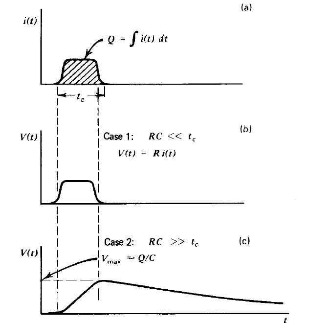
The case \(RC \ll t_c\) is useful for high count rate events when accurate energy estimate is not necessary [2]. In the other case where \(RC \gg t_c\), the time taken to for the voltage pulse to reach its maxima is determined by the detector (not the dominant pole) while the slow discharge is set by \(\tau \). If the capacitance is fixed (which need not be the case in a reverse biased junction), then we can estimate the charge \(Q=V/C\).
Pulse mode operation is useful for spectroscopic and low count rate applications. Information about each individual interaction is captured, assuming there is no pulse pile up.
Let’s assume that \(\tau \gg t_c\), i.e., the average time between pulses is less than the readout circuit’s response time. The average current, \(I_0\), can be used to determine the number of events and the charge per interaction.
\begin {equation} \label {eqn:current_mode_avg} I_0 = rQ = r\frac {E}{W}q \end {equation}
where \(r\) is the event rate, \(E\) is the average energy deposited per event, \(W\) is the work function/energy to produce an e-h pair, and \(q\) is simply the charge of an electron.
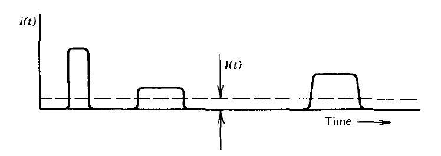
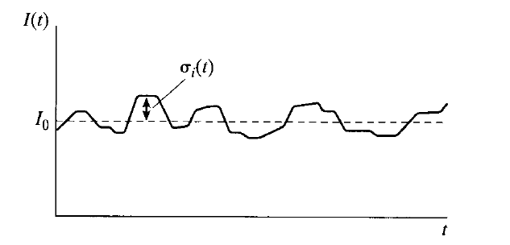
As shown in figure 14, there is statistical uncertainty at any given instant of time but the average is still given by eqn 8. The standard deviation in number of counts is simply \(\sigma = \sqrt {r\tau }\) and the standard deviation in the instantaneous current measured is given by
\[\sigma _{I(t)} = \frac {I_0}{\sqrt {r\tau }}\]
The instantaneous current can fluctuate up or down because of the current response curve shown at the top of figure 13. The current from the sensing element is varying.
Current mode operation is useful for high count rate applications. Instead of current, we can also measure the mean square voltage and arrive at similar results.
Pulse amplitude gives us insight into the energy deposited during an interaction. Since we have a finite resolution, we can count \(\Delta N\) counts in a bin that is \(\Delta E\) wide around the energy \(E\). The width of the bin dictates how many counts are sorted into this. To remove this dependence on bin width, we can choose to plot \(\delta N/\Delta E\) vs. \(E\) instead of simply \(\Delta N\) vs. \(E\). We can substitute \(\Delta E\) with \(\Delta H\) where \(H\) is the amplitude of the detector signal in current or voltage. In the limit that \(\Delta H \rightarrow 0\), we arrive at the differential pulse height distribution plot, i.e., \(dN/dH\) vs. \(H\).
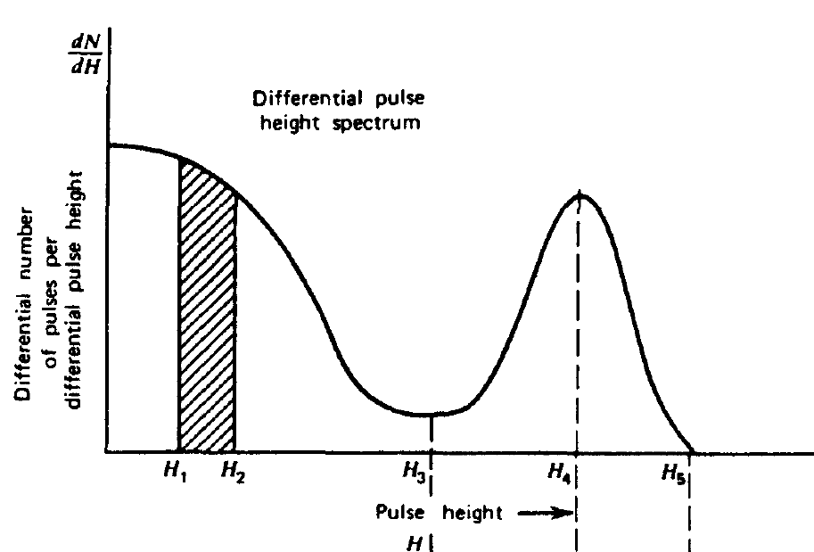
In figure 15, the number of counts between and two amplitudes (or energies) is simply the hatched area under the distribution
\[N_{12} = \int _{H_1}^{H_2} \frac {dN}{dH} \, dH\]
This is the same as summing the number of counts in each bin in the discrete case.
Figure 16 shows how we can extract resolution from the differential pulse height distribution. If the average charged particles produced in interactions is \(N\), we can show that the resolution of the detector within the Poisson statistical limit is (assuming no other sources of noise) inversely proportional to
\[R \propto \frac {1}{\sqrt {N}}\]
This shows that we need the sensing element to produce a large number of charge carriers to improve energy resolution. Semiconductor diodes are good for this purpose and have shown to achieve 1% resolution [2].
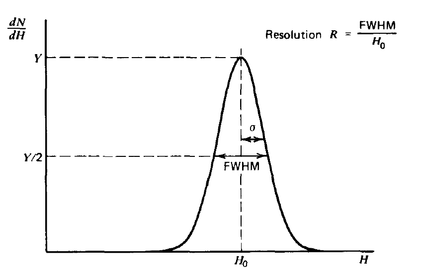
There is a minimum amount of time that must separate two consecutive incident events so that they can be recorder as two distinct pulses. This is known as dead time. Obviously, we want to minimize dead time to minimize any loss in number of counts.
Figure 17 shows the two possible kinds of dead time. In the non-paralyzable dead time case, a second event that occurs within the dead time does not effect the dead time. In the paralyzable case, the event within the dead time can actually increase the dead time.
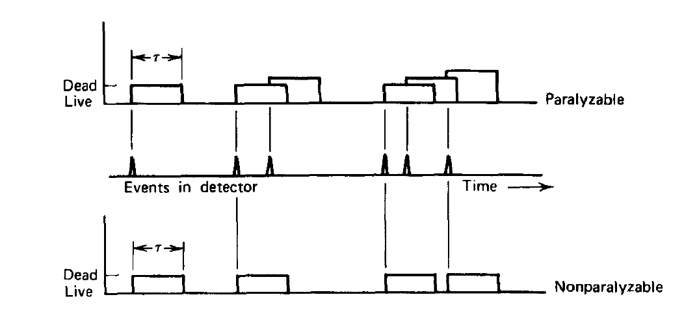
Since the ionization energy of Si and Ge are a few eV, a large number of charged particles are generated when a gamma interacts with them. Therefore, semiconductor-based detectors are known to have the best energy resolution [2]. The drawbacks include the small size and susceptibility to radiation damage. [2] notes that Si is used for charged particle spectroscopy while Ge is used mainly for gamma ray spectroscopy. We will look at the reason for this a bit later in the notes.
The probability per unit time that an e-h pair is thermally generated in an intrinsic semiconductor is
\[p(T) = CT^{1.5} \, \exp \bigg (-\frac {E_g}{2kT}\bigg )\]
Clearly, it’s a strong function of bandgap and temperature. If we assume all electrons/holes are created at a single point, diffusion broadens the distribution to a Gaussian function as a function of time with standard deviation
\begin {equation} \label {eqn:charge_diffusion_std_dev} \sigma = \sqrt {2Dt} \end {equation}
where \(D\) is the diffusion coefficient and \(t\) is the elapsed time. We can further estimate \(D\) as
\[D= \mu \frac {kT}{e} \approx \mu \times 0.0253 \, \text {V at 293 K} \]
where \(\mu \) is the mobility of the charge carrier whose distribution we’re looking at.
If we now apply an electric field, the carriers have a net drift velocity in the direction of (or opposite to) the field. Assuming we don’t hit saturation velocity, this drift velocity can be written in terms of mobility and electric field as follows
\[v = \mu |\vec {E}|\]
We can now rewrite eqn 9 as
\[\sigma = \sqrt {\frac {2kT x}{e |\vec {E}|}}\]
where \(x\) is the drift distance \(v\cdot t\). The FWHM of the Gaussian effectively broadens in presence of electric field.
Since the secondary (or recoil) electron generated from a gamma photon interaction can be treated similar to a beta particle (fast electron), we can look at the general principles of interaction of ionizing radiation with semiconductors to understand gamma ray spectroscopy.
Say the total energy deposited by the charged particle is \(E\) and the average pair-creation energy is \(\epsilon \), then the expected total number of charge carriers is roughly \(E/\epsilon \). This assumes total absorption of the charged particle without any of the loss mechanisms mentioned in the previous section. In Si, this energy is roughly 3.5 eV at room temperature. In reality, however, we do not always see \(E/\epsilon \) number of e-h pairs generated. This is because we assumed a Poisson model along the track of the charge particle for the e-h pair generation. All the events may not necessarily be independent and this assumption fails. To account for this, we introduce a dimensionless constant called the Fano factor. It is defined as
\begin {equation} F = \frac {\text {observed statistical variance}}{E/\epsilon } \end {equation}
Note that variance is equal to number of events in a Poisson distribution. \(F\) for Si is around 0.12 [2].
The probability of interaction for gamma rays is independent of doping since the dopants are extremely sparse in quantity [2].
A quick note on the pulse formation. Since electrons and holes have different mobilities, it takes unequal amount of time for them to be collected. Instead of a Dirac delta-like pulse, we might see a broader pulse with a kink as shown in figure 18.
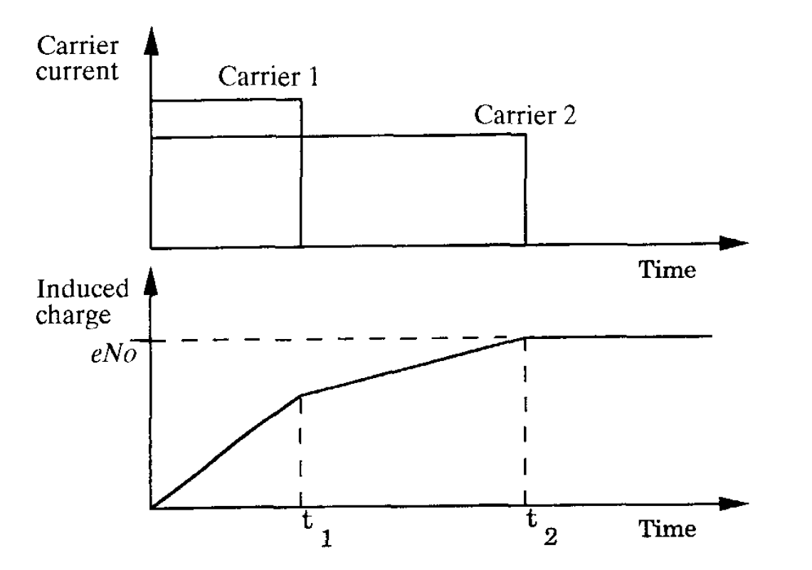
We want to apply reverse bias so that the electric field is large enough so that the charge carriers are accelerated without being lost to traps and recombination. In addition, the greater the depletion depth, more charge carriers created by the gamma ray interaction are swept away by the electric field as opposed to letting diffusion do the job (poorly). In practice, we want the entire Si to be depleted so that we have the maximum volume over which the radiation produced charge carriers can be collected.
We see that to increase the depletion width (or depth since the diode extends into the substrate), we can increase the voltage or decrease the doping of the lighter doped side. Intrinsic or ‘compensated’ semiconductors are preferred to decrease the doping concentration.
\begin {equation} \label {eqn:depletion_width} d \propto \sqrt {\frac {V}{N_{A/D}}} \end {equation}
The capacitance of the depletion region is inversely proportional to \(d\). Since we want a small detector capacitance, increasing the voltage benefits us on the circuit design too.
[2] notes that commercial silicon detectors with 50-200 \(\mu m\) depletion thicknesses are good enough for transmission detectors. These can serve as dosimeters but not spectroscopes.
Traditionally, the detectors sit on top of the readout ICs (ROICs) as shown in figure 19. Such a configuration is also known as a hybrid active pixel [12]. We look at different detectors here.
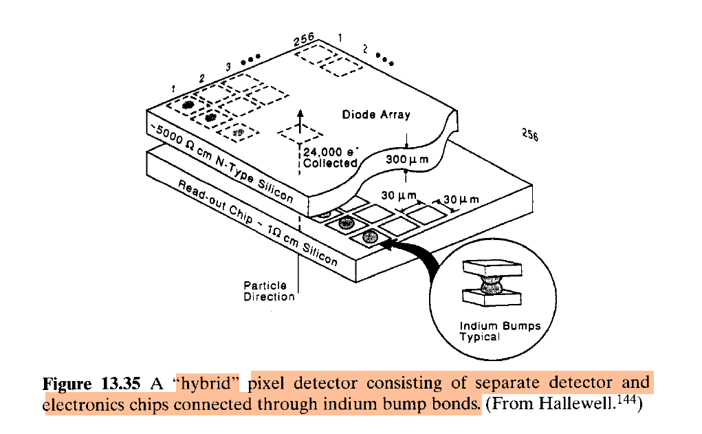
The main hurdle for monolithic integration is the fact that we need a highly resistive silicon substrate for the detector (to maximize depletion thickness) while this is not the case for the ROIC.
p-i-n diodes are useful for soft X-ray detection (around 20-30 keV). A thickness of 300 \(\mu m\) is useful for detection of these lower energy X-rays. The sensitivity of these diodes (counts/mR of exposure rate) depends on incoming energy and as expected, decreases several orders of magnitude with increasing energy.
MAC for Si is within 10% of soft tissue for gamma photon energies between 150 keV to 1 MeV. This could be exploited to calculate the total dose received by an organ provided the detector is thick enough to absorb the gamma photon.
TODO: read more about avalanche diodes and SPADs operation
Avalanche diodes have been used in low-energy X-ray detectors and portable gamma ray monitors.
In drift detectors, we apply a potential gradient such that the electrons and holes drift towards widely spaced cathode and anode. Depending on the time between the holes and electrons take to reach their respective electrode, we can determine the position within the detector where the gamma photon interacted. A couple of examples are illustrated in figure 20.
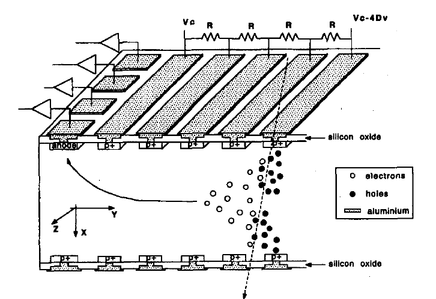
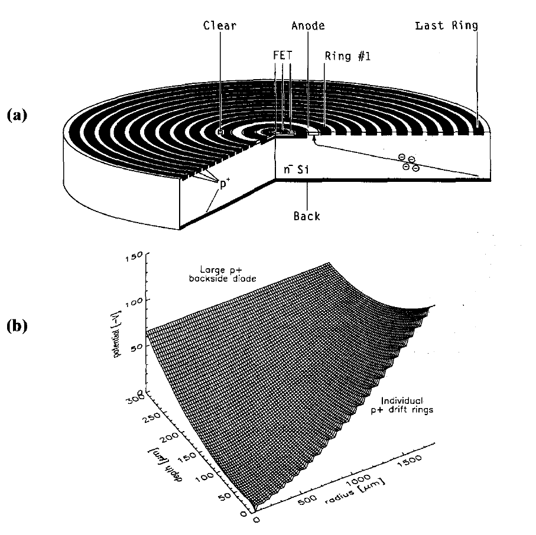
One advantage of SDDs is the smaller parasitic capacitance they introduced to the ROIC. Smaller capacitance leads to lower noise floor and improved SNR. This is also advantageous in counting rate applications where we can have shorter shaping times (higher BWs) since noise is lower than other detectors. Pixel-based designs also have the above advantage with parasitic capacitance.
CCDs integrate the charge collected over the exposure period (integration period) and then read out the entire frame. The readout time maybe longer than the integration period and this is one disadvantage. One way to circumvent this issue of dead time is to store and read out frame B (say half the pixels) while frame A (other half of the pixels) is being captured, and switch the order when both operations are done. CCDs have been used to detect single X-ray photon in a pixel due to their low readout noise. [2] notes that in spectroscopy mode, we limit single hit per pixel in CCDs so that we can determine individual photon energy.
Another issue is that in some CCDs the whole bulk is not depleted. In this case the electrons generated in the undepleted Si are at the mercy of diffusion and can spread to multiple pixels while being collected. There is also loss of signal due to recombination in the undepleted Si.
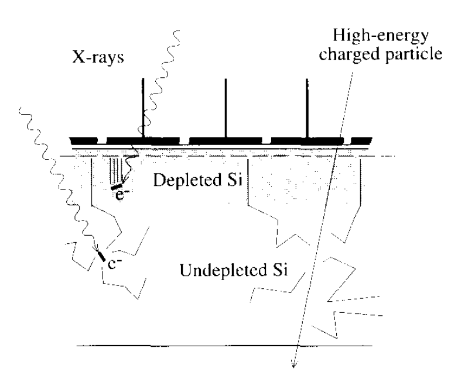
As seen from eqn 11, we need to square the applied voltages to increase depletion widths, or drastically improve the purity of the substrate. High purity Ge (HPG) detectors can create depletion thicknesses in order of a cm [2] with a few hundreds of volts of reverse bias. Therefore, they are commonly used for gamma ray detection.
Instead of HPGe, we can compensate the p-substrate with Li to nullify the dopant concentration. We can then achieve up to 5-10 mm of active thickness within Si too.
CdTe, GaAs, PbI\(_2\), HgI\(_2\), and Cd\(_{1-\text {x}}\)Zn\(_\text {x}\)Te (CZT) are some other popular semiconductors for gamma detection.
In CMOS imagers, the fundamental unit is a reverse biased photodiode. The fill factor of the pixel determines the radiation-sensitive area. The main difference between using CMOS imagers for imaging versus radiation detection is that in the former case the signal is predominantly generated in the depletion region alone while in the latter case the signal can be generated in the entire bulk. In fact, we want the signal to be generated in the bulk so that the secondary electron does not escape without delivering all of its energy within the bulk. The problem, however, with CMOS pixels is that the depletion region is limited to a few microns (or less). Hence, there is a lot of signal loss. This could be a challenge for spectroscopy and dose estimation but might not be a big issue for rate counting applications.
Since the photodiodes are not generally fully depleted, let’s look at what is the active volume which contributes to signal generation. In XH018 LPMOS module, we see that the p-epi layer is 10 \(\mu m\) deep with a resistivity of 15 \(\Omega \cdot \text {cm}\). The p-substrate itself is 725 \(\mu m\) thick and has a resistivity 1000\(\times \) greater than the epi layer. We can, therefore, assume that the e-h pairs generated in the substrate will recombine almost fully and that the signal is primarily generated in the epi layer and is transported through diffusion as shown in figure 22 [11].
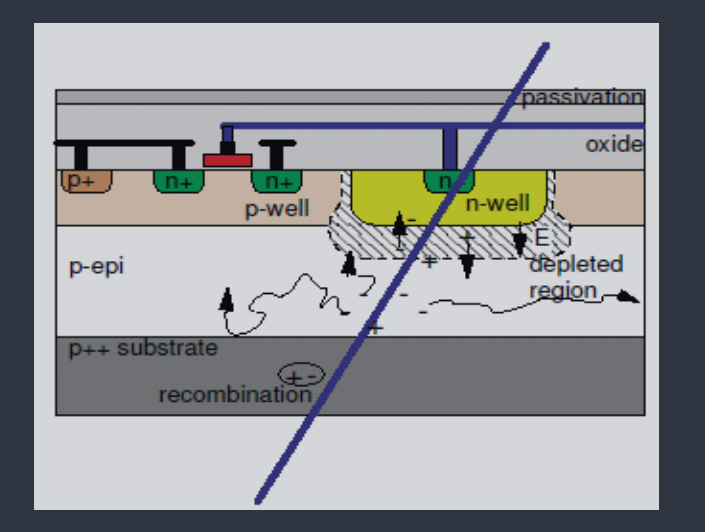
A signal generated in the p-epi layer can diffuse and spread out. If there is a PMOS device in the vicinity of the diode, the n-well layer, which is reverse biased w.r.t the substrate, can steal some of the charges before they can reach the diode of interest. This is shown in figure 23.
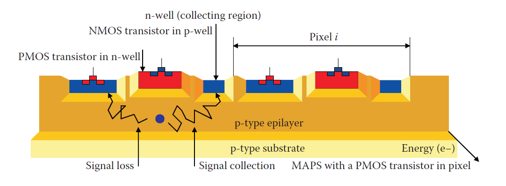
In SENTRI, we see that there are a few PMOS devices but they are spaced out as much as possible from the diode as shown in figure 24. I’m not sure if we can do any better in layout since we need these PMOS devices for the rest of the circuits. The PMOS devices in SENTRI are all min. sized and are much smaller than the diode (\(2 \mu m \, \times 2 \,\mu m\)).
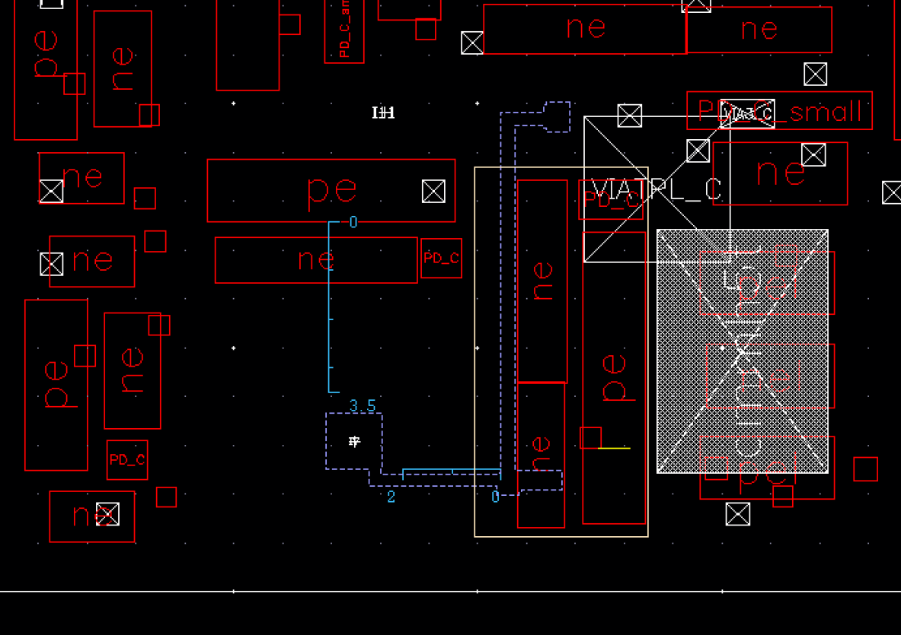
Figure 25 shows the two popular pixel architectures for CMOS imagers. 4T pixels offer CDS and hence, noise performance but require a special CMOS process required to fabricate the pinned photodiode and the transfer gate.
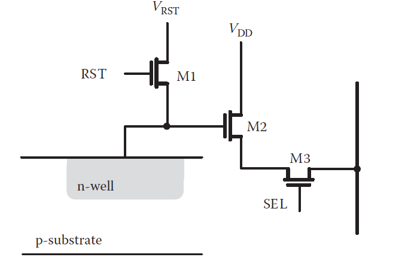
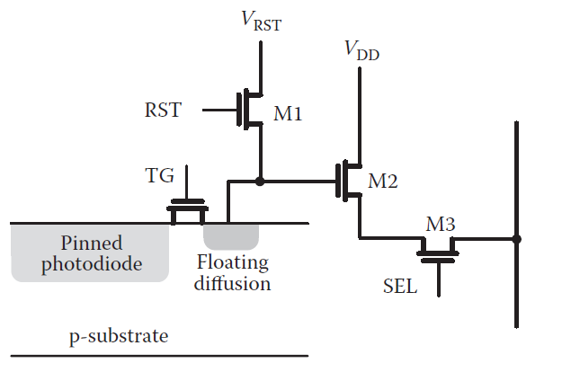
Since both of these architectures do not have any PMOS devices nearby, we might not have much losses due to PMOS n-well [12]. I’m still skeptical as to how this can avoid the PMOS devices in the rest of the signal chain. Maybe in these cases the diodes are much larger and fill factors are huge?
[12] notes that 4T pixels suffer from radioactive damage and this can affect the pinning voltage, well capacity (floating diffusion node), and increase noise, degrade charge transfer efficiency. TODO: Take a look at some of these studies to see how much dose can actually cause damage to these pixels.
Let us look at a few studies that use CMOS image sensors for radiation detection.
[13] s one of the earlier works I could find that uses 4T pixels for radiation sensing. They have a specialized process that has a deep p-well and a high-resistivity p-epi layer to maximize the depletion width and minimize crosstalk between the charges generated in different pixels. This is demonstrated in figure 26. The paper tested out pixel pitches varying from 6 \(\mu m\) to 45 \(\mu m\). The floating diffusion cap was estimated to be around 2.3 fF.
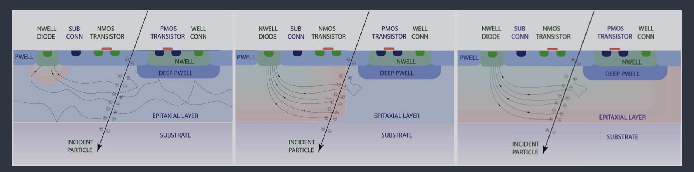
[14] also uses 4T pixels for radiation detection. Their chip is able to withstand 1 kGy of total ionizing dose (TID) while being latch-up free and can detect up to \(10^7\) particles/cm\(^2\)/s. They note that they used a high resistivity epi so that the depletion layer extends well into the p-epi layer which is around 12 \(\mu m\) thick. The ASIC is a 50\(\times \)51 pixel array with pixel pitch of 20 \(\mu m\). The output of the pixel is digitized using a 3-bit column-parallel ADC at a rate of 10,000 fps (4 \(\mu s\) conversion time per sample). There are two ADCs per column, one at the top and one at the bottom, to get away with 25 channels as opposed to 50. The ADC uses a single comparator instead of seven as expected in a conventional flash ADC, and adds the threshold to the signal and then compares if RESET - (SAMPLE + THRESHOLD) ¿ 0. There are 7 thresholds corresponding to a 3-bit output. The ADC top-level schematic is illustrated figure 27. This paper also reports increase in dark noise as the pixel receives higher dose (above a kGy).
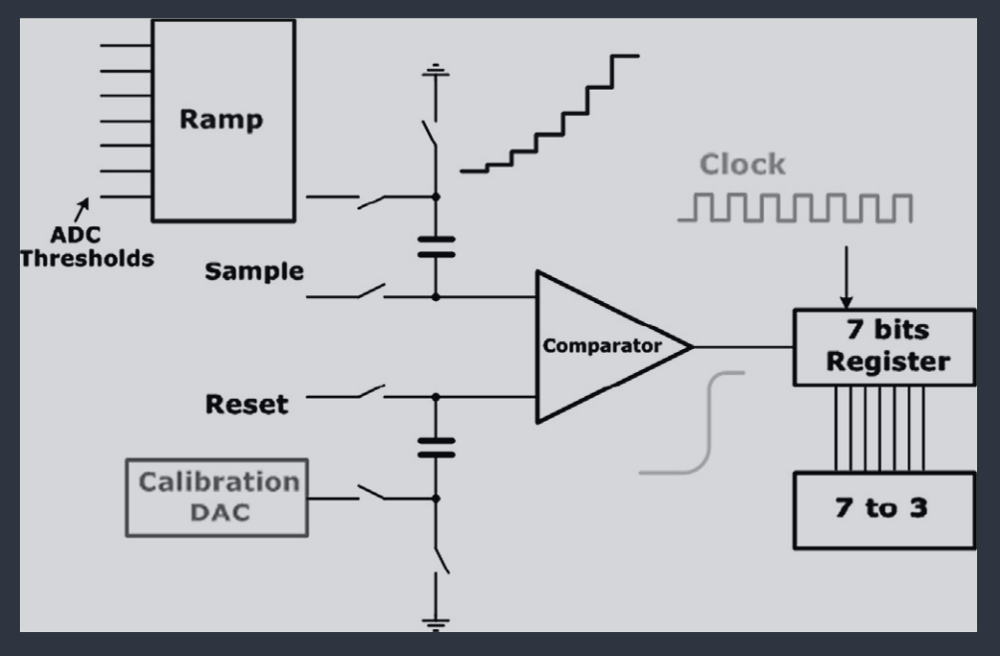
[15] uses TowerJazz 180 nm CMOS imaging process with a high-resistivity (¿ 1 k\(\Omega \)cm) p-epi and applies a reverse bias of -6 V between the substrate and the p-epi as shown in figure 28. Three different p-epi thicknesses - 18, 25, and 30 \(\mu m\), and different pixel pitches ranging from 20-50 \(\mu m\) were tested.
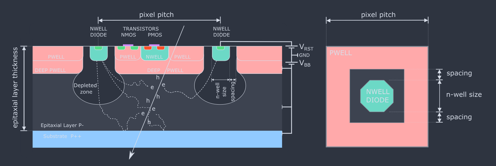
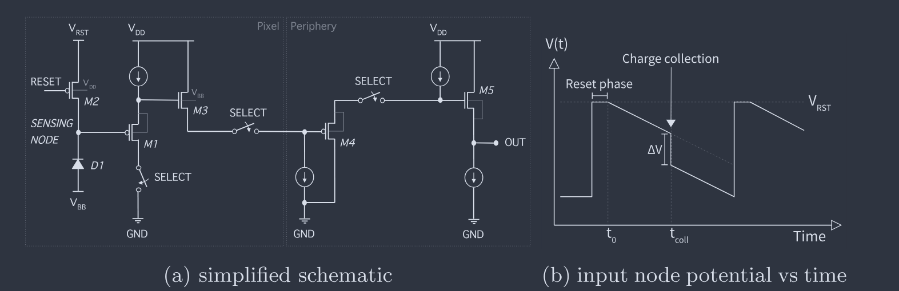
One curious thing is that this paper uses PMOS devices despite the fact that the pn junction could steal some of the charges away. My guess is that since they are relying more on drift than diffusion, this choice is reasonably justifiable. The pixel schematic and operation are described in figure 28. During the RESET phase, the sensing node is pulled up to 0.8 V using M2. There is finite leakage but when charge is deposited there is a \(\Delta V\) drop in voltage at the sensing node. Between resets the signal is continuously monitored for a sudden drop in any of the 64 channels and this triggers a readout sequence. I’m not too sure if I understand how the frame rates are being defined or what are the samples of interest - do we ignore events before the reset? Looks like not, but then we do we take the entire sample and then define this trigger event at all?
[11]
Let’s quickly run through some useful math concepts.
Say we have a collection of \(N\) independent measurements of the same physical quantity
\[x_1,x_2,x_3, \dots , x_i, \dots x_N\]
We define a frequency distribution function \(F(x)\) which accounts for the relative frequency with which particular \(x_i\) shows up in the dataset.
\[F(x) = \frac {\text {number of occurrences of $x_i$}}{\text {number of measurements } (N)} \]
Note that \(F(x)\) is automatically normalized, in other words,
\[\sum _{i=1}^{\infty } F(x_i) = 1\]
The first moment of the frequency distribution gives us the mean of the distribution
\begin {equation} \label {eqn:mean_from_fd} \bar {x}_e = x_i \, \sum _{i=1}^{\infty } F(x_i) \end {equation}
We can now define a residual, or how far a given measurement is from the mean, as
\[d_i = x_i - \bar {x}_e\]
It is obvious to see that \(\sum _{i=1}^{\infty } d_i = 0\) (also true for finite number of measurements \(N\)). In practice, since we can never collect infinitely many data points, we make the distinction between the true mean \(\bar {x}\) and the experimental mean \(\bar {x}_e\).
For a large data set, we define the sample variance as follows
\begin {equation} \label {eqn:variance} \sigma ^2 \approx \frac {1}{N} \sum _{i=1}^{N} \, (x_i - \bar {x}_e)^2 \end {equation}
We can also write the variance in terms of \(F(x)\) as
\begin {equation} \label {eqn:variance_from_fd} \sigma ^2 = \sum _{i=0}^{\infty } \, (x_i - \bar {x})^2 \, F(x) \end {equation}
If we have \(N\) measurements and calculate the mean once, we can calculate the variance using an expression derived from eqn 14 [2]
\[\sigma ^2 = \bar {x^2} - \bar {x}^2\]
We define standard deviation (\(\sigma \)) as the square root of variance and gives us the ‘typical’ value for the difference between a given measurement and the mean of the distribution.
Under certain conditions, we can predict the distribution function that will describe the results of many repetitions of a given measurement. We define a measurement as counting the number of successes resulting from a given number of trials. Each trial is assumed to be a binary process in that only two results are possible: Either the trial is a success or it is not a success. For everything that follows, we also assume that the probability of success is a constant for all trials [2].
But what is a trial and a success in real situations? If rolling a die is a trial, we can define success as the chance of a certain number. Similarly, if we are observing a radioactive nucleus for time \(t\), which is the trial, then the success metric is observing the nucleus decay during this time period. The number of trials is equivalent to the number of nuclei under observation [2].
If we have \(n\) trials with each trial having a constant probability of success \(p\), then the probability of counting exactly \(x\) successes is given by
\begin {equation} \label {eqn:binomial_distri} P(x) = \frac {n !}{(n-x)! \, x!} \, p^x \, (1-p)^{n-x} \end {equation}
Some important properties of the binomial distribution are
Under the approximation that the probability of success is small (and constant, of course), the binomial distribution in eqn 15 reduces to a Poisson distribution
\begin {equation} \label {eqn:poisson_distri} P(x) = \frac {(pn)^x \, \exp (-pn)}{x!} = \frac {(\bar {x})^x \, \exp (-\bar {x})}{x!} \end {equation}
The property \(\bar {x} = pn\) holds for the Poisson distribution as well. In case of nuclear decay, we have a very large \(n\) (number of nuclei) and the observation window is much shorter than the half-life (so a very small \(p\)). Hence, a Poisson distribution usually describes nuclear decay very well.
The first two properties of the binomial distribution also hold for the Poisson distribution. In addition, the third property simplifies to yield
\[\sigma ^2 = \bar {x} = np\]
In other words, the standard deviation is just the square root of the mean of the distribution.
In addition to \(p \ll 1\), if the mean of the distribution is large, the binomial distribution simplifies to a Gaussian distribution
\begin {equation} \label {eqn:gaussian_distri} P(x) = \frac {1}{\sqrt {2 \pi \bar {x}}} \, \exp \bigg (- \frac {(x-\bar {x})^2}{2\bar {x}}\bigg ) \end {equation}
All the three properties of the Poisson distribution hold true for the Gaussian distribution as well. In addition, the distribution is symmetric about the mean.
Say you want to match the experimental observations to one of the statistical models above. If we start with a Poisson distribution, we first match the mean of the observed data to the true mean since we do not have a better predictor, and therefore, \(\bar {x} = \bar {x}_e\). It is unlikely that the variance predicted by the statistical model matches exactly to the one predicted by the Poisson distribution. How do we qualitatively determine this difference?
We define a new parameter \(\chi ^2\) to capture this as defined below
\begin {equation} \label {eqn:chi_squared} \chi ^2 = \frac {1}{\bar {x}_e} \sum _{i=1}^{N} (x_i-\bar {x_e})^2 = \frac {(N-1)s^2}{\bar {x}_e} \end {equation}
where \(s\) is the variance of the data collected (as opposed to \(\sigma ^2\) which is the variance of the statistical model). The degree to which \(s^2/\bar {x_e}\) deviates from unity gives us a measure for the difference between the observed and predicted variance. Once we calculate the \(\chi ^2\) value for the experimental set, we can use standard tables to identify a \(p\)-value (not the same as chance of success \(p\) from before). A low \(p\)-value (say 0.02) indicates that there are abnormally large fluctuations in the collected data and a very high \(p\)-value (say 0.98) indicates that there are abnormally low fluctuations (data could be fraudulent). A \(p\)-value of 0.5 is a perfect fit to the Poisson distribution and shows that the system behaves as expected.
Let us look at a few cases where we can apply the above statistics to help us design experiments or determine spec.
TODO: I didn’t quite follow the Currie Equation derivation
A Poisson random process is one which has a constant probability of occurrence per unit time [2]. The process has no memory and the probability per unit time is constant regardless of past behavior.
We now ask, what is the distribution function that describes the time interval between two occurrences of such a random process? Say the first event occurred at time \(t=0\), what is the probability that the next event occurs between the time \(t\) and \(t+dt\)? Note that we need a finite (and an arbitrarily small) time interval to get a non-zero probability from the probability distribution function. Two independent events must occur. Firstly, there should be no event from time \(t=0\) to \(t\), and next, an event must take place within \(dt\) time interval. \(P(0)\) gives us the probability that no events happened in all the trials (or time intervals in this case). If the average rate of occurrence of the event is \(r\), then \(r\, dt\) gives the probability of occurrence in that time interval. Therefore,
\[I_1(t) \, dt = P(0) \times r \, dt = r \exp (-rt) \, dt\]
The corresponding probability distribution function is
\begin {equation} \label {eqn:time_btw_two_events} I_1(t)= r \exp (-rt) \end {equation}
Eqn 19 now gives us the distribution function for intervals between adjacent random events. It is an exponentially decaying function w.r.t to the interval length as shown in figure 29. Two interesting things to note are that - the most probable time interval is zero, and the average interval length is \(1/r\). The fact that we chose time \(t=0\) to be the start point does not have much significance here. Hence, we can also use the distribution in eqn 19 to determine the time-to-next event.
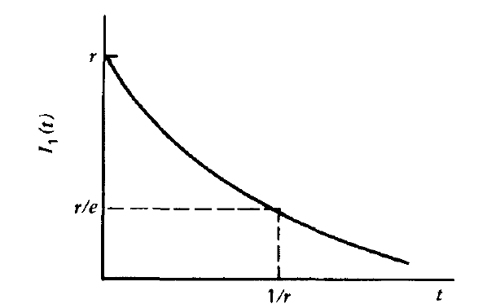
Instead of reporting each and every count, some detector systems report data after reaching \(N\) counts. How do we estimate the time between two reporting events? We can extend the above logic as follows. From \(t=0\) to \(t\), there are \(N-1\) events seen by the detector, and in the next \(dt\) interval, we find the probability that an event occurs.
\[I_N(t) \, dt = P(N-1) \times r \, dt = \frac {(rt)^{N-1}\exp (-rt)}{(N-1)!} r \, dt\]
The average interval between two reported events is \(N/r\) and the most probable time between reports is \((N-1)/r\). For \(N=1\), we see that this expression collapses to eqn 19. Figure 30 plots for this distribution function for a few values of \(N\).
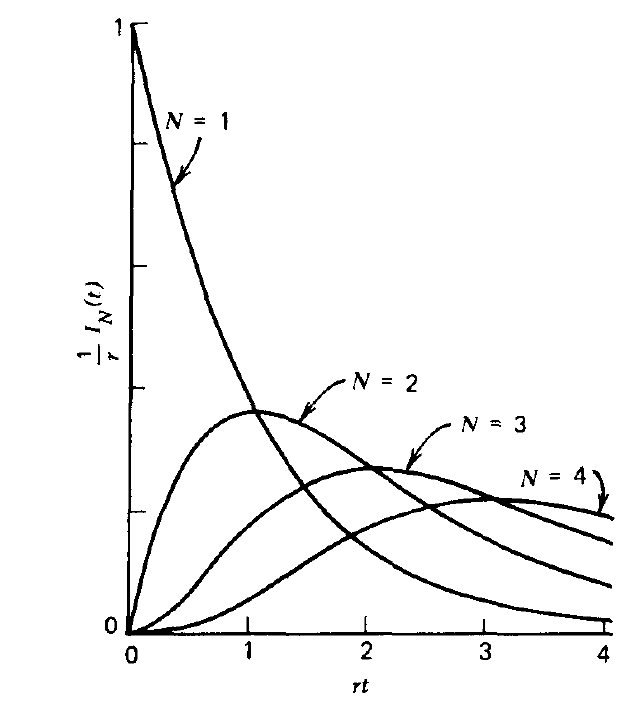
We’ll follow the analysis from certain chapters in [16] here. We go through some basics of TIAs and then see how to use these as charge-sensitive amplifiers (CSAs). We’ll also do noise analysis, effect of parasitics on CSAs, and some transistor-level designs in the radiation detector space. Then we move on to basics of pulse shaping - both time-invariant and time-invariant shapers.
In figure 13, we saw that most detectors operate in the regime where \(\tau \ll RC\) of the FE circuits. In this regime, we can model the input as a Dirac Delta function
\begin {equation} \label {eqn:input_model_td} i_{in}(t) = Q_{in}\delta (t) \end {equation}
The input spectrum is a wideband constant and has the units A/Hz (or C).
\begin {equation} \label {eqn:input_model_spectrum} I_{in}(s) = Q_{in} \end {equation}
Note that eqn 21 is not the power spectrum since it has units of A/Hz as opposed to A\(^2\)/Hz. Squaring this does, however, give us the energy spectrum of the input. Check TIA design notes for more info. The constant energy spectrum leads us to the conclusion that the power spectrum delivered by a Dirac Delta pulse is zero. Instead, we can compare the energy, or equivalently, the charge seen at the input.
The simplest idea to detect current is through pass it through some impedance and measure the voltage as shown in figure 31 [17].
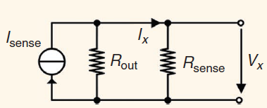
Let us quickly review TIAs before jumping into CSAs. We’ll first look at TIAs with an ideal op-amp and then substitute the op-amp with a single pole system. We’ll also look at noise analysis and the difference between C-TIA and R-TIA in this regard. We’ll also look at some
Say the
National Toxicology Program. 15th Report on Carcinogens. Research Triangle Park, NC: National Toxicology Program, Dec. 2021. url: https://www.ncbi.nlm.nih.gov/books/NBK304365/.
Glenn F. Knoll. Radiation Detection and Measurement. 3rd. New York, NY: John Wiley & Sons, Inc., 2000. isbn: 0-471-07338-5.
Brandeis University High Energy Physics (BNDHEP). Irradiation Apparatus. https://www.bndhep.net/Irradiation/Apparatus.html. Accessed: 2026-06-19.
Douglas E. Peplow. “Specific Gamma-Ray Dose Constants with Current Emission Data”. In: Health Physics 118.4 (Apr. 2020), pp. 402–416. doi: 10.1097/HP.0000000000001136.
Integrated Environmental Management, Inc. (IEM). Gamma-Ray Dose Constants. http://www.iem-inc.com/information/tools/gamma-ray-dose-constants. Accessed: 2026-06-19.
RADSAFE Mailing List Archive. Gamma-Ray Dose Constants and Mass Energy Absorption Coefficients. http://health.phys.iit.edu/extended_archive/9802/msg00361.html. Accessed: 2026-06-19. Feb. 1998.
Radiology Key. Quantification and Measurement of Dose. https://radiologykey.com/quantification-and-measurement-of-dose/. Accessed: 2026-06-24. Apr. 2016.
Frank Herbert Attix. Introduction to Radiological Physics and Radiation Dosimetry. New York, NY: John Wiley & Sons, Inc., 1986. isbn: 978-0-471-01146-0.
J. H. Hubbell and S. M. Seltzer. Tables of X-Ray Mass Attenuation Coefficients and Mass Energy-Absorption Coefficients. Section 3: The Mass Energy-Absorption Coefficient, \(\mu _{en}/\rho \). Version 1.4. Accessed: 2026-06-24. National Institute of Standards and Technology (NIST). 2004. url: https://physics.nist.gov/PhysRefData/XrayMassCoef/chap3.html.
M. J. Berger et al. ESTAR, PSTAR, and ASTAR Databases. Appendix: Composition of Material. Version 1.2.3. Accessed: 2026-06-24. National Institute of Standards and Technology (NIST). 2005. url: https://physics.nist.gov/PhysRefData/Star/Text/appendix.html.
Yang Zhou. “Development of a CMOS pixel sensor for embedded space dosimeter with low weight and minimal power dissipation”. en. In: ().
Renato Turchetta and Krzysztof Iniewski, eds. Analog Electronics for Radiation Detection. Devices, Circuits, and Systems. Boca Raton, FL: CRC Press, 2016. isbn: 978-1498703567.
Rebecca E. Coath et al. “A Low Noise Pixel Architecture for Scientific CMOS Monolithic Active Pixel Sensors”. In: IEEE Transactions on Nuclear Science 57.5 (Oct. 2010), pp. 2490–2496. issn: 1558-1578. doi: 10.1109/TNS.2010.2052469. url: https://ieeexplore.ieee.org/document/5512562/ (visited on 06/23/2026).
N. Guerrini et al. “Design and characterisation of a highly miniaturised radiation monitor HMRM”. en. In: Nuclear Instruments and Methods in Physics Research Section A: Accelerators, Spectrometers, Detectors and Associated Equipment 731 (Dec. 2013), pp. 154–159. issn: 01689002. doi: 10.1016/j.nima.2013.06.073. url: https://linkinghub.elsevier.com/retrieve/pii/S0168900213009066 (visited on 06/19/2026).
G. Aglieri Rinella et al. “Charge collection properties of TowerJazz 180 nm CMOS Pixel Sensors in dependence of pixel geometries and bias parameters, studied using a dedicated test-vehicle: The Investigator chip”. en. In: Nuclear Instruments and Methods in Physics Research Section A: Accelerators, Spectrometers, Detectors and Associated Equipment 988 (Feb. 2021), p. 164859. issn: 01689002. doi: 10.1016/j.nima.2020.164859. url: https://linkinghub.elsevier.com/retrieve/pii/S0168900220312560 (visited on 06/22/2026).
Angelo Rivetti. CMOS: Front-End Electronics for Radiation Sensors. Devices, Circuits, and Systems. Boca Raton, FL: CRC Press, 2015. isbn: 978-1-4665-6810-5.
“IEEE Solid-State Circuits Magazine”. In: IEEE Solid-State Circuits Magazine 17.3 (2025). issn: 1943-0582.